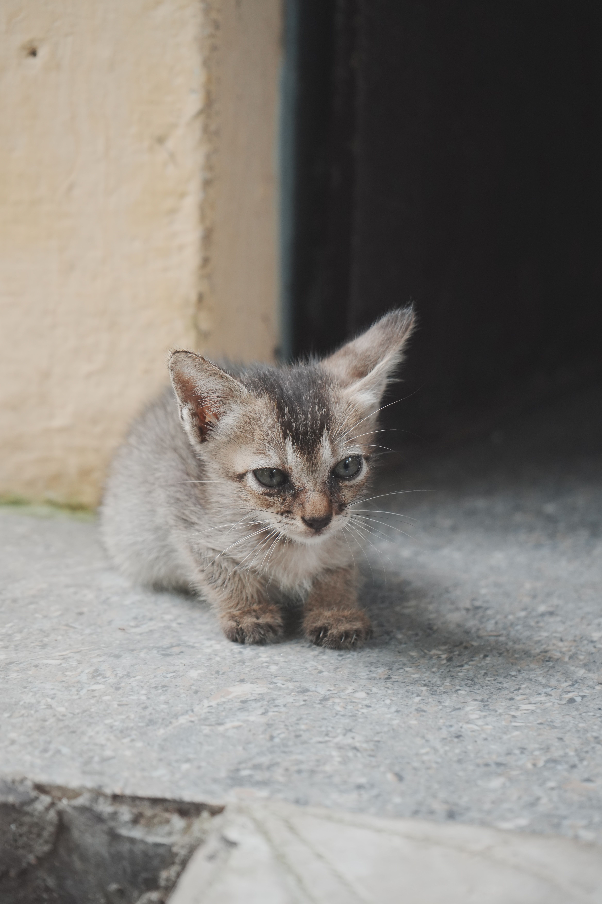

Bienestar primero
Ofrecer seguridad, atención y tiempo para que cada animal avance a su ritmo.
SOBRE NOSOTROS
Somos una asociación comprometida con el bienestar animal. Acompañamos a cada animal con paciencia y cuidados hasta que esté preparado para encontrar un hogar responsable.


CÓMO EMPEZÓ
Adopta Huellas nació cuando un pequeño grupo de personas empezó a ayudar a animales que necesitaban cuidados y un lugar seguro.
Aquellas primeras acciones dieron forma a una idea: que cada animal pudiera recuperar la confianza y encontrar una familia que respetara su carácter y sus necesidades.
POR QUÉ EXISTIMOS
Queremos que cada adopción sea una decisión consciente, acompañada y duradera. Para conseguirlo, hay tres cosas que guían nuestro trabajo.
Ofrecer seguridad, atención y tiempo para que cada animal avance a su ritmo.
Entender su historia, personalidad y necesidades antes de buscar una familia.
Resolver dudas y ayudar a que la adopción se convierta en un compromiso de por vida.